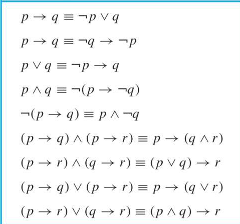

Chapter 1 The Foundations:Logic and Proofs¶
Part 1 Propositional Logic(命题逻辑)¶
The language of propositional logic(命题逻辑的语言)¶
Constructing a Propositions¶
Proposition(命题): A declarative sentence that is either true or false, but not both.
Compound Propositions(复合命题): Propositions that are formed by combining simpler propositions using logical connectives.
- Propositional variables（命题变量）: p, q, r...
- Logical connectives（逻辑连接词）:
- Negation ¬ （NOT）
- Conjunction ∧ （AND）
- Disjunction ∨ （OR）（可以二者兼具）
- Exclusive or operator ⊕ （XOR）（只能二选其一）
- Implication → （IF-THEN)
- Biconditional ↔ （ IF AND ONLY IF / IFF）
- NOR operator ↓
- NAND operator |
more details about connectives
implication
for p → q, p is called the hypothesis/premise and q is called the conclusion/consequence.
p → q is false only when p is true and q is false.
different ways to express p → q:
- if p, then q
- p only if q
- p is sufficient for q
- q is necessary for p
converse(逆命题): q → p
inverse(否命题): ¬p → ¬q
contrapositive(逆否命题): ¬q → ¬p
biconditional
p ↔ q is true if p and q have the same truth value.
different ways to express p ↔ q:
- p if and only if q
- p is necessary and sufficient for q
- p iff q
NOR and NAND
NOR: ¬(p ∨ q)
also called Peirce's arrow
NAND: ¬(p ∧ q)
also called Sheffer stroke
NOR and NAND are called universal gates because any other logic gate can be constructed using only NOR or NAND gates.
Eg
p↓p = ¬(p ∨ p) = ¬p; p|p = ¬(p ∧ p) = ¬p; (p↓q)↓(p↓q) = p ∨ q;
Precedence(优先级)
- ¬
- ∧, ∨, ⊕, ↓, | (注意这里按理来说没有优先级之分，但是为了少写点括号所以人为规定了优先级，此行从左到右优先级递减)
- →, ↔ that means p ∨ q ∧ r actually is p ∨ (q ∧ r)
Applications（应用）¶
- Translating English Sentences
- Consistent System Specification:为每个命题变量分配真值使所有命题都为真即可，否则系统不一致。
- Boolean Search
- Logic Puzzles
Logical Equivalences(逻辑等价式)¶
- Tautologies(永真式) 如 p ∨ ¬p always true
- Contradictions(矛盾式) 如 p ∧ ¬p always false
- Contingencies(可能式) 如 p ∨ q
Show Logical Equivalences¶
- using truth tables:万能但费事
- using already-proved equivalences
some equivalences
- Commutative Laws(交换律)
- p ∨ q ≡ q ∨ p
- p ∧ q ≡ q ∧ p
- Associative Laws(结合律)
- (p ∨ q) ∨ r ≡ p ∨ (q ∨ r)
- (p ∧ q) ∧ r ≡ p ∧ (q ∧ r)
- Distributive Laws(分配律)
- p ∨ (q ∧ r) ≡ (p ∨ q) ∧ (p ∨ r)
- p ∧ (q ∨ r) ≡ (p ∧ q) ∨ (p ∧ r)
- Idempotent Laws(幂等律)
- p ∨ p ≡ p
- p ∧ p ≡ p
- Domination Laws(支配律)
- p ∨ T ≡ T
- p ∧ F ≡ F
- Identity Laws(恒等律)
- p ∨ F ≡ p
- p ∧ T ≡ p
- De Morgan's Laws(德摩根定律)
- ¬(p ∨ q) ≡ ¬p ∧ ¬q
- ¬(p ∧ q) ≡ ¬p ∨ ¬q
- Absorption Laws(吸收律)
- p ∨ (p ∧ q) ≡ p
- p ∧ (p ∨ q) ≡ p
some more


Dual(对偶)¶
-
The dual of a compound proposition is obtained by interchanging ∨ ∧ and ¬, and interchanging T and F.
-
Theorem: For any compound proposition P and Q, \(P \Leftrightarrow Q\) if and only if \(P^* \Leftrightarrow Q^*\).
Propositional Satisfiability(命题可满足性)¶
- A compound proposition is satisfiable if there is an assignment of truth values to its variables that makes it true.
- A compound proposition is unsatisfiable iff it is a contradiction or its negation is a tautology
Propositional Normal Forms(命题范式)¶
- Conjunctive Normal Form(CNF): a conjunction of disjunctions(合取范式)
- Disjunctive Normal Form(DNF): a disjunction of conjunctions(析取范式)
注
- $\neg (p \wedge q) \vee r $ is not a normal form, but \((\neg p \vee \neg q) \vee r\) is.
单个命题或字句也是 CNF 或 DNF 如 \(p\) 是 CNF 和 DNF，\(p \vee q\) 也是 CNF 和 DNF
Part 2 Predicate Logic(谓词逻辑)¶
Predicates and Quantifiers(谓词和量词)¶
Logical Equivalences(逻辑等价式)¶
Nested Quantifiers(嵌套量词)¶
Part 3 Methods of Proof(证明方法)¶
Rules of Inference(推理规则)¶
Proof Methods (证明方法)¶
Proof Strategies(证明策略)¶
创建日期: 2024年3月9日 08:53:42